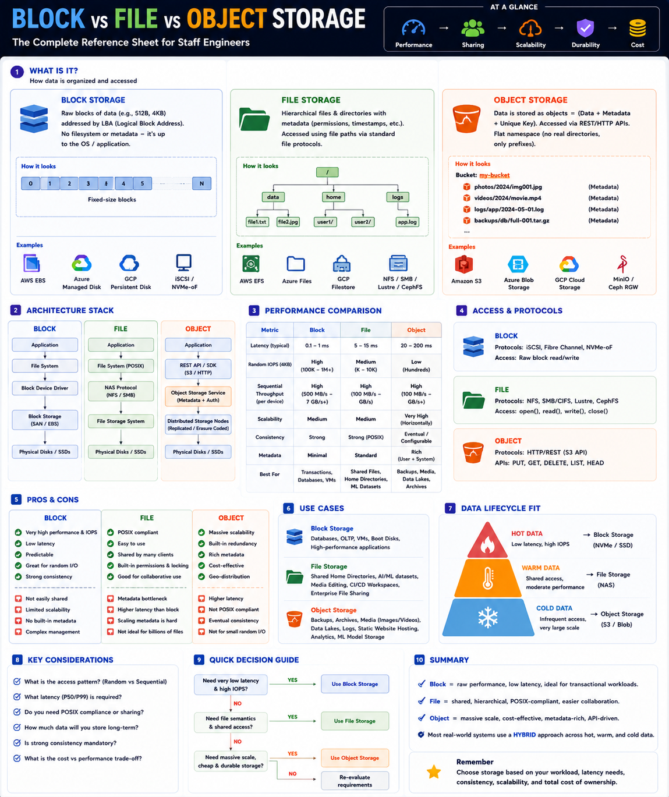

Choosing the right storage abstraction — Staff Engineer level
The Big Picture
Not every workload has the same storage requirements. Choosing the wrong storage type causes high latency, poor scalability, increased cost, and consistency issues.
Three Storage Abstractions
Block Storage
OS builds filesystem on top. Storage knows nothing about files.
File Storage
Files, directories, permissions. Shared across clients.
Object Storage
PUT / GET / DELETE. Flat key-value namespace.
Characteristics at a Glance
| Feature | Block | File | Object |
|---|---|---|---|
| Access Method | Raw blocks (LBA) | File path (POSIX) | REST API (key) |
| Latency | 0.1–1 ms ⭐⭐⭐⭐⭐ | 5–15 ms ⭐⭐⭐ | 20–200 ms ⭐⭐ |
| Random IOPS | Highest ⭐⭐⭐⭐⭐ | Medium ⭐⭐⭐ | Lowest ⭐ |
| Scalability | Medium | Medium | Massive |
| Metadata | Minimal | Standard | Very Rich |
| Consistency | Strong | Strong (POSIX) | Eventual / Configurable |
| Sharing | Single client | Multi-client | Any client (HTTP) |
Data Organization & Access
Block Storage — Deep Dive
Strengths
Trade-offs
Best for: MySQL, PostgreSQL, Kafka logs, VM disks, WAL, transaction logs.
File Storage — Deep Dive
Strengths
Trade-offs
Best for: Shared team files, AI/ML datasets, CI/CD workspaces, enterprise file shares.
Object Storage — Deep Dive
Strengths
Trade-offs
Best for: Images, videos, data lakes, backups, archival, analytics.
Cloud Service Mappings
| Cloud | Block | File | Object |
|---|---|---|---|
| AWS | EBS | EFS | S3 |
| Azure | Managed Disk | Azure Files | Blob Storage |
| GCP | Persistent Disk | Filestore | Cloud Storage |
Real-World Examples
| System | Why | Storage |
|---|---|---|
| MySQL / PostgreSQL | Random reads, fsync, WAL, transactions | Block (EBS, Persistent Disk) |
| Kubernetes StatefulSets | Persistent Volumes for DBs | Block PVs |
| AI/ML Training | Shared datasets, POSIX semantics | File (EFS, Lustre, GPFS) |
| CI/CD Workspace | Multiple agents share build cache | File |
| Netflix Videos | Cheap, durable, globally replicated | Object (S3) |
| Hadoop Data Lake | Petabytes of Parquet/ORC at low cost | Object (S3, GCS) |
Hybrid Architecture — Production Reality
Most production systems combine all three storage types, each serving a different data lifecycle stage.
Hot data on NVMe Block → Warm data on File → Cold data on Object = best price/performance ratio.
Storage Selection Workflow
Ask: latency SLA, access pattern (random vs sequential), sharing needs, consistency, growth over 5 years.
Staff Engineer Thinking
Junior
Should we use S3?
Senior
Is object storage sufficient?
Staff asks
Production Failure Scenarios
Slow Database Queries
Cause: Database stored on file/object storage · Fix: Move to Block Storage
Expensive Infrastructure
Cause: Cold backups stored on SSD Block · Fix: Move to Object Storage
ML Training Jobs Waiting
Cause: Multiple nodes downloading data repeatedly from object storage · Fix: Use shared File Storage (EFS/Lustre)
Media Platform Scaling Issues
Cause: Images stored on local disks · Fix: Move to Object Storage + CDN
Staff Engineer Decision Framework
| Workload | Best Storage |
|---|---|
| MySQL / PostgreSQL | Block |
| Kafka Logs | Block |
| VM Disks | Block |
| Shared Team Files | File |
| CI/CD Workspace | File |
| AI/ML Training Dataset | File |
| Images & Videos | Object |
| Data Lake | Object |
| Backups & Archive | Object |
Production Design Checklist
Key Takeaways
